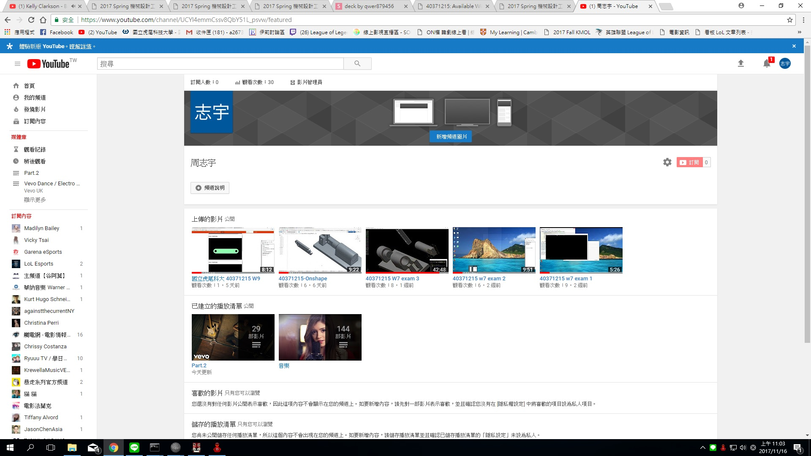
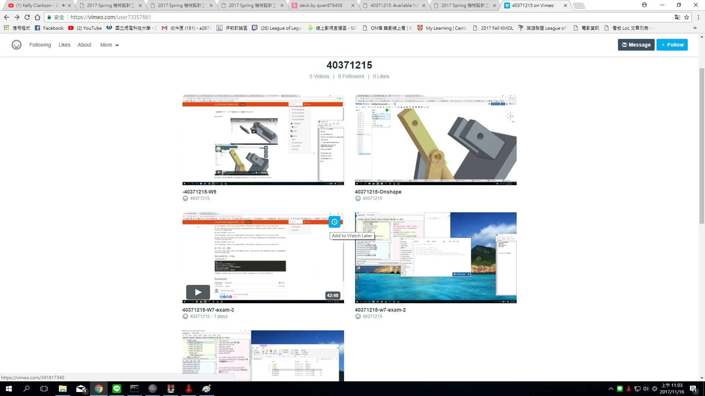
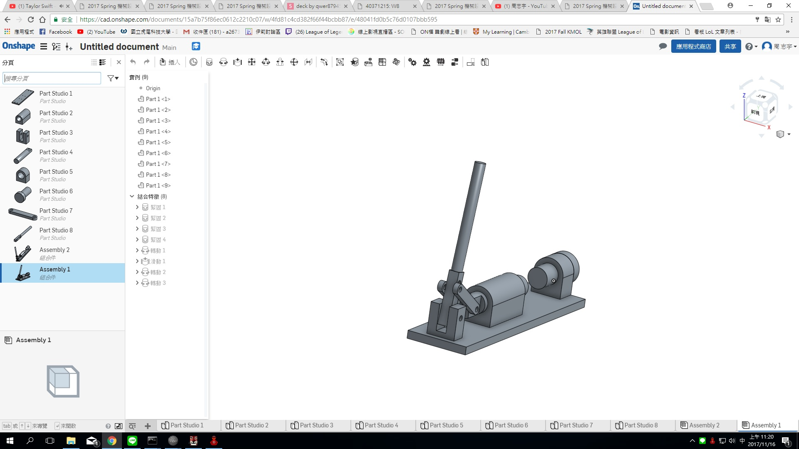
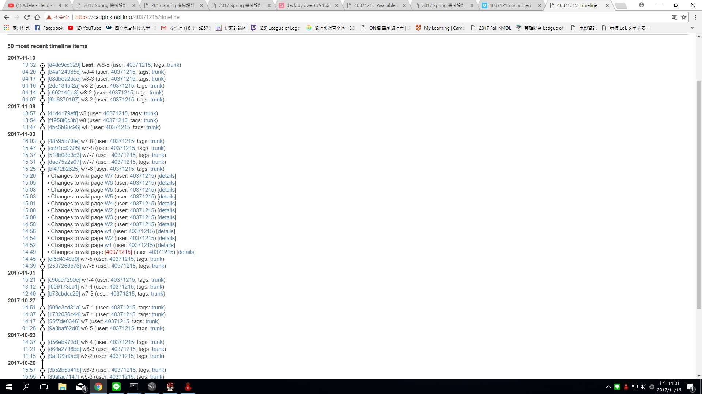
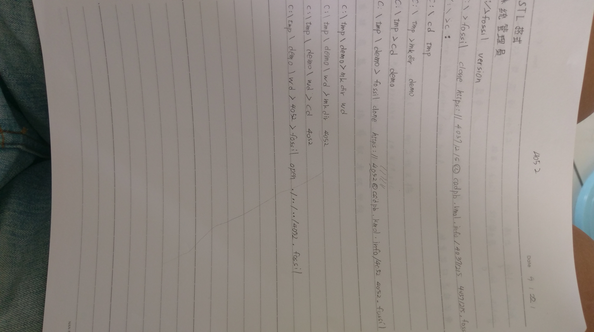
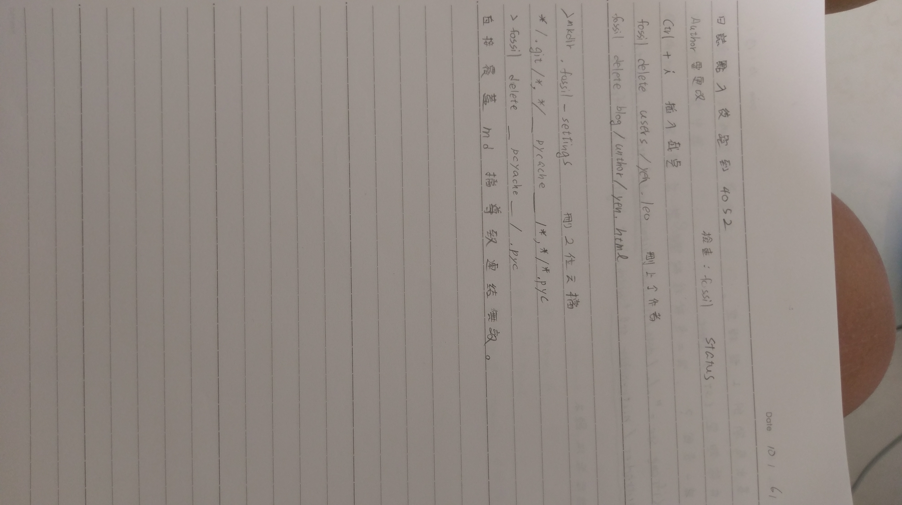
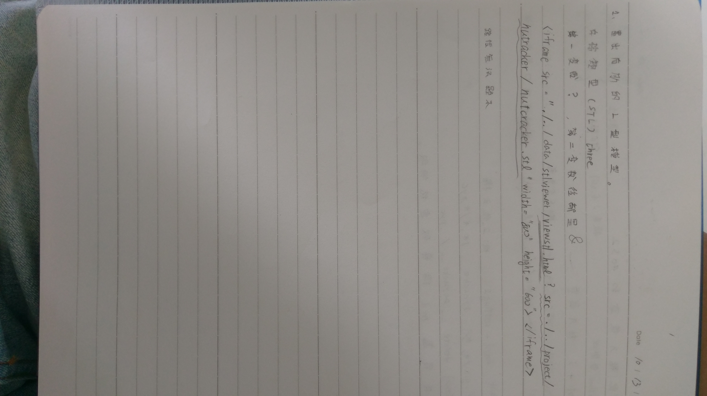
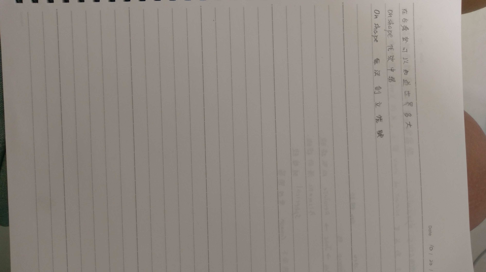
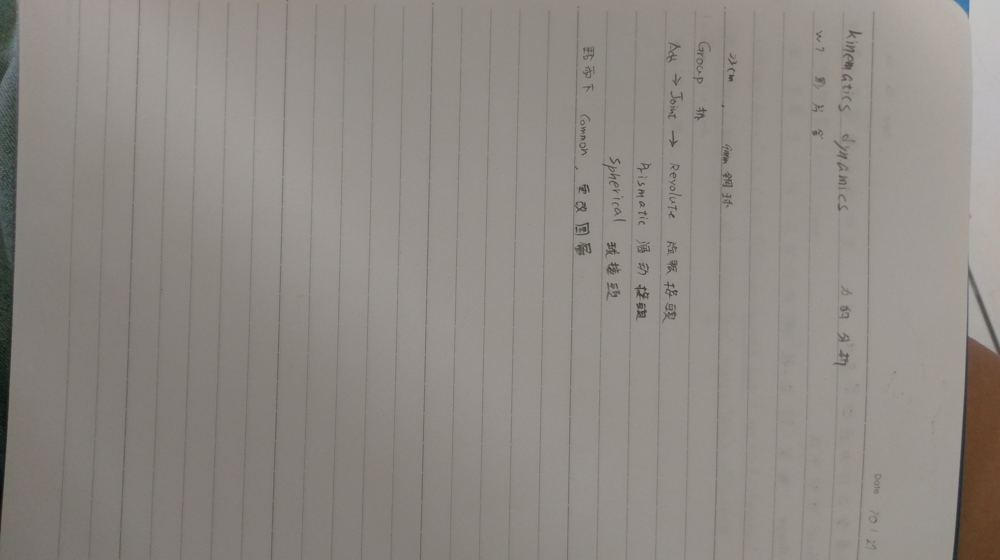
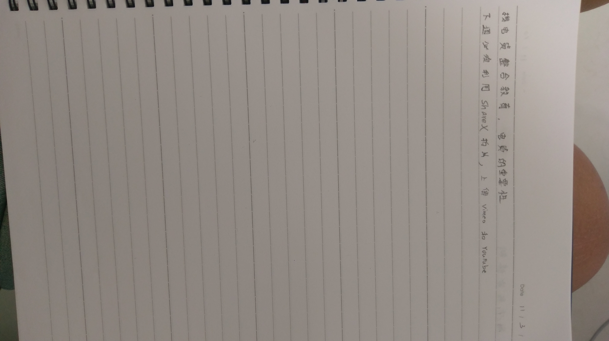

<!DOCTYPE html>
<html lang="en"
>
<head>
    <meta charset="utf-8">
<title>
2017 Spring 機械設計工程系網際內容管理
</title>
    <meta name="description" content="A framework for easily creating beautiful presentations using HTML">
    <meta name="author" content="Hakim El Hattab">
    
    <meta name="apple-mobile-web-app-capable" content="yes">
    <meta name="apple-mobile-web-app-status-bar-style" content="black-translucent">
    
    <meta name="viewport" content="width=device-width, initial-scale=1.0, maximum-scale=1.0, user-scalable=no">
    
    <link rel="stylesheet" href="data/reveal/reveal.css">
    <link rel="stylesheet" href="data/reveal/black.css" id="theme">
    
    <!-- Theme used for syntax highlighting of code -->
    <link rel="stylesheet" href="data/reveal/zenburn.css">

    <!-- Printing and PDF exports -->
    <script>
        var link = document.createElement( 'link' );
        link.rel = 'stylesheet';
        link.type = 'text/css';
        link.href = window.location.search.match( /print-pdf/gi ) ? 'data/reveal/pdf.css' : 'data/reveal/paper.css';
        document.getElementsByTagName( 'head' )[0].appendChild( link );
    </script>

    <!--[if lt IE 9]>
    <script src="data/reveal/html5shiv.js"></script>
    <![endif]-->
</head>

<body>
<div class="reveal">
<!-- Any section element inside of this container is displayed as a slide -->
<div class="slides">
<section data-markdown>
    <script type="text/template">
## 2017Fall CADP 與 CP

### 虎科大機械設計工程系

<small>
Created by [40371215](blog/index.html)
</small>

[Wiki](https://cadpb.kmol.info/40371215/wcontent)

[期中報告](https://vimeo.com/243076834)

[Github倉儲](https://github.com/mcae)

    </script>
</section>


						
<section data-markdown>
    <script type="text/template">
# W1-W3

* 準備筆記本、隨身碟與耳機
* 了解如何用Fossil在近端建立網路倉儲
* 先在近端運作, 然後同桌電腦, 最後區網與雲端
* 了解機械設計本質, 六種表達與如何培養創造力
* 將python2017fall_36複製到隨身碟

    </script>
</section>


						
<section data-markdown>
    <script type="text/template">
# W4-W6

* 熟悉近端與區域網路中Fossil  SCM的功能與操作細、遠端推送、網誌的呈現
* Solvespace、V-rep練習
* Onshape帳號申請、ShareX使用
    </script>
</section>


						
<section>
    <section data-markdown>
        <script type="text/template">
    # W7-W9

    * 線上考試
    * Pelican 靜態網誌
    * Solvespace、Onshape 與 V-rep

        </script>
    </section>


    						
    <section data-markdown>
        <script type="text/template">
    # 影片一

    <iframe src="https://player.vimeo.com/video/240116217" width="640" height="492" frameborder="0" webkitallowfullscreen mozallowfullscreen allowfullscreen></iframe>
        </script>
    </section>


    						
    <section data-markdown>
        <script type="text/template">
    # 影片二

    <iframe src="https://player.vimeo.com/video/240123122" width="640" height="492" frameborder="0" webkitallowfullscreen mozallowfullscreen allowfullscreen></iframe>

        </script>
    </section>


    						
    <section data-markdown>
        <script type="text/template">
    # 影片三

    <iframe src="https://player.vimeo.com/video/241817340" width="640" height="492" frameborder="0" webkitallowfullscreen mozallowfullscreen allowfullscreen></iframe>

        </script>
    </section>


    						
</section>


						
<section>
    <section data-markdown>
        <script type="text/template">
    # 期中成果


        </script>
    </section>


    						
    <section data-markdown>
        <script type="text/template">
    # Youtube

    * [Youtube](https://www.youtube.com/channel/UCYl4emmCssv8QbY51L_psvw/featured)


    </img>

        </script>
    </section>


    						
    <section data-markdown>
        <script type="text/template">
    # Vimeo

    * [Vimeo](https://vimeo.com/user73357661)


    </img>


        </script>
    </section>


    						
    <section data-markdown>
        <script type="text/template">
    # Onshape


    </img>


        </script>
    </section>


    						
    <section data-markdown>
        <script type="text/template">
    # 網誌

    * [40371215](https://cadpb.kmol.info/40371215/doc/trunk/blog/)

    </img>
        </script>
    </section>


    						
    <section data-markdown>
        <script type="text/template">
    # 筆記

    * [Wiki](https://cadpb.kmol.info/40371215/wcontent)

    </img>
    </img>
    </img>

    </img>
    </img>
    </img>
    </img>
        </script>
    </section>


    						
</section>


						
<section>
    <section data-markdown>
        <script type="text/template">
    # 課程如何評分

    * 出席: 20% (if 全勤: 提問與答題內容*平時表現)
    * 平時表現: 30% (隨身碟與倉儲內容 + 每堂筆記內容)
    * 驗收考試: 30% (三階段現場錄製操作與心得影片-註記時間與錄製人員學號)
    * 驗收簡報: 20% (驗收週各組簡報, 各學員簡報, 根據驗收考試與簡報內容自評與互評)

        </script>
    </section>


    						
    <section data-markdown>
        <script type="text/template">
    # 自評分數

    * 70


        </script>
    </section>


    						
</section>


						
</div>

</div>

<script src="data/reveal/head.min.js"></script>
<script src="data/reveal/reveal.js"></script>
<script>
        // More info https://github.com/hakimel/reveal.js#configuration
        Reveal.initialize({
            controls: true,
            progress: true,
            history: true,
            center: true,

            transition: 'slide', // none/fade/slide/convex/concave/zoom

            // More info https://github.com/hakimel/reveal.js#dependencies
            dependencies: [
                { src: 'data/reveal/classList.js', condition: function() { return !document.body.classList; } },
                { src: 'data/reveal/marked.js', condition: function() { return !!document.querySelector( '[data-markdown]' ); } },
                { src: 'data/reveal/markdown.js', condition: function() { return !!document.querySelector( '[data-markdown]' ); } },
                { src: 'data/reveal/highlight.js', async: true, callback: function() { hljs.initHighlightingOnLoad(); } },
                { src: 'data/reveal/zoom.js', async: true },
                { src: 'data/reveal/notes.js', async: true },
                { src: 'data/reveal/math.js', async: true }
            ]
        });
</script>
</body>
</html>
